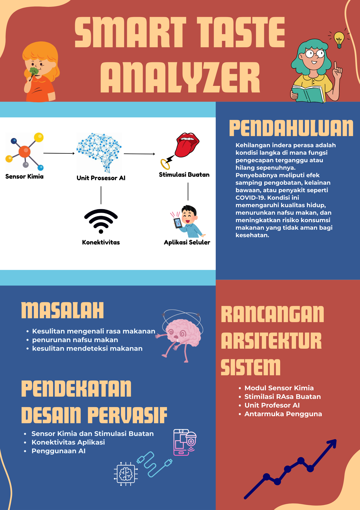

Deskripsi Proyek
Smart Taste Analyzer adalah sebuah proyek inovatif yang dirancang untuk membantu individu dengan kehilangan indera perasa akibat berbagai kondisi, seperti efek samping pengobatan, kelainan bawaan, atau penyakit tertentu seperti COVID-19. Kehilangan indera perasa tidak hanya mengurangi kenikmatan makanan, tetapi juga berpotensi menurunkan nafsu makan dan kemampuan mendeteksi makanan berbahaya, yang berdampak pada kesehatan secara keseluruhan.
Proyek ini bertujuan untuk mengembangkan alat berbasis teknologi komputasi pervasif yang mampu mendeteksi rasa makanan melalui sensor kimia, menyimulasikan pengalaman rasa dengan teknologi seperti stimulasi listrik, dan menyediakan informasi tambahan tentang rasa serta keamanan makanan. Alat ini juga terhubung dengan aplikasi seluler untuk memungkinkan kontrol, personalisasi, dan analisis data secara real-time menggunakan konektivitas Bluetooth atau WiFi.
Teknologi kecerdasan buatan (AI) digunakan untuk menganalisis data dari sensor, memberikan rekomendasi yang relevan, serta menyesuaikan pengalaman rasa berdasarkan preferensi pengguna. Smart Taste Analyzer dirancang portabel dengan pendekatan modular, memastikan adaptabilitas untuk pengembangan lebih lanjut, seperti deteksi nutrisi atau alergen.
Dengan memadukan inovasi teknologi dan pendekatan berbasis pengguna, alat ini tidak hanya memberikan solusi efektif untuk meningkatkan kualitas hidup individu yang kehilangan indera perasa, tetapi juga berpotensi berkontribusi pada sektor kesehatan, ekonomi, dan lingkungan.
Anggota Kelompok
Yosia Adwily Nainggolan
121450063
Kontribusi: (Ikut berdiskusi, memberikan ide, mengerjakan bagian laporan dan mengerjakan bagian website)
Catherine Firdhasari Maulina Sinaga
121450072
Kontribusi: (Ikut berdiskusi, memberikan ide, mengerjakan bagian poster dan menyiapkan file presentasi)
Proposal
Anda dapat mengunduh proposal kami melalui tautan di bawah ini:
Unduh ProposalPoster/Slide Presentasi
Video Presentasi
Atau, Anda dapat menonton video presentasi kami di YouTube melalui tautan berikut: Klik di sini untuk menonton di YouTube.